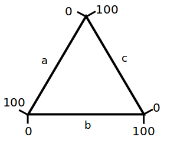
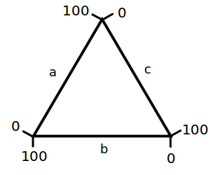
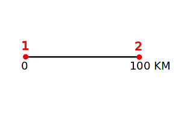
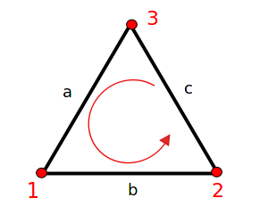

Aligner les axes X-Y

Cliquez sur quatre points connus sur les axes dans la ordre indiqué en rouge . Deux sur l'axe X (X1, X2) et deux sur l'axe Y (Y1, Y2).
Grossissement: | Temps |
Couleur Crosshair: |
|
Chargez un fichier Javascript pour étendre davantage les capacités de WebPlotDigitizer.
Par exemples, visitez le WebPlotDigitizer-Examples Référentiel.
Entrez les valeurs X des deux points cliqués sur l'axe X et les valeurs Y des deux points cliqués sur les axes Y
| Point 1 | Point 2 | Échelle de notation | |
| Axe X: | |||
| Axe Y: |
* Pour les dates, utilisez le format aaaa / mm / jj hh: ii: ss, où ii désigne les minutes (par exemple 2013/10/23 ou 2013/10 ou 2013/10/23 10:15 ou juste 10:15). Pour les exposants, entrez les valeurs 1e-3 pour 10^-3.
Entrer les valeurs au niveau des deux points sélectionnés sur les axes continus le long des barres
| Point 1 | Point 2 | Échelle de notation |
| Point 1 | Point 2 | Échelle de notation | |
| R: | |||
| Θ: |
Sens horaire
Axes Orientation
|  |  |
Normal | Inverse |
Portée de variables
0 à 1 | 0 à 100 |
|
Ensemble de Données: Variables:
Plotly est un site sécurisé d'analyse de données et de graphiques avec partage de données et contrôles d'accès. Visitez http://plot.ly pour plus de détails. |
Trier Trier par: Odre: Format Formatage de la date: Formatage des nombres: Chiffres: Séparateur de colonne: |
Cliquez sur quatre points connus sur les axes dans la ordre indiqué en rouge . Deux sur l'axe X (X1, X2) et deux sur l'axe Y (Y1, Y2).

Cliquez sur deux points connus (P1, P2) sur les axes continus le long des barres

Cliquez sur les deux extrémités de la barre d'échelle sur la carte.

Cliquez sur le centre, suivi de deux points connus.

Cliquez sur les trois coins dans l'ordre indiqué ci-dessus.
Version 4.1
Ce programme est distribué sous la Licence publique générale GNU Version 3 .
Droits d'auteur 2010-2017 Ankit Rohatgi <ankitrohatgi@hotmail.com>
https://automeris.io/WebPlotDigitizer
R: G: B:
Couleur dominate:
Les relations suivantes sont utilisées pour convertir les pixels de l'image en données:
Exporter un fichier JSON contenant les calibrages des axes, des données numérisées et des mesures. Ce fichier JSON peut être chargé pour reprendre le travail ultérieurement. Vous pouvez également télécharger un 'fichier de projet' combiné qui inclut ce fichier JSON et également l'image dans un seul fichier TAR.
Project name: .json/.tar
Chargez un JSON précédemment exporté ou fichier de projet (.tar)
(Remarque: Cela effacera toutes les données non enregistrées dans le terrain actuel.)
JSON / Fichier de projet:
Cliquez pour sélectionner un point de données. Les touches suivantes peuvent ensuite être utilisées pour ajuster la position:
| Curseur (flèches) - | Monter / descendre / droite / gauche |
| Shift + Cursor - | Vitesse de mouvement plus rapide |
| Q - | Sélectionnez le point suivant |
| W - | Sélectionnez le point précédent |
| Del / Backspace - | Suprimer le point |
| E - | Modifier le label (diagramme à barres) |
Label:

Cliquez sur les quatre coins de la région à transformer comme indiqué.
Est-ce que vous souhaitez modifier le calibrage des axes existants ou sélectionnez un nouveau type d'axes?
Export data from all datasets
Nom:
Compte:
Nom:
Nom: